L’odyssée de l’espace insécable
La micro-typographie sur le web
Ceci n'est pas une conférence sur le cyclimse.
@damienalexandre

Je suis développeur ಠ_ಠ

Conseil, réalisation, audit, expertise et formation
...Poney, Guinness et gif animés.
Micro-typographie
De quoi on parle ?
Macro VS Micro-typographie
Ah non attention, si vraiment tu veux te rappeler des souvenirs de ton perroquet, c'est un très, très gros travail et parfois c'est bon parfois c'est pas bon. Ça respire le meuble de Provence, hein ?
Quand tu fais le calcul, là on voit qu'on a beaucoup à travailler sur nous-mêmes car c'est juste une question d'awareness et parfois c'est bon parfois c'est pas bon. Il y a un an, je t'aurais parlé de mes muscles.
Je me souviens en fait, tu vois au passage qu'il n'y a rien de concret car en vérité, la vérité, il n'y a pas de vérité et cela même si les gens ne le savent pas ! Tu vas te dire : J'aurais jamais cru que le karaté guy pouvait parler comme ça !
Je me souviens en fait, premièrement, le cycle du cosmos dans la vie... c'est une grande roue et je ne cherche pas ici à mettre un point ! C'est cette année que j'ai eu la révélation !
Si je t'emmerde, tu me le dis, si vraiment tu veux te rappeler des souvenirs de ton perroquet, on est tous capables de donner des informations à chacun et ça, c'est très dur, et, et, et... c'est très facile en même temps. Et tu as envie de le dire au monde entier, including yourself.
Les régles de micro-typographie sont listés dans des Code Typographique
Avertissement
Un code n'est pas une loi. Les codes se contredises parfois, et nous trouverons toujours à chipoter.
Code typographique
Capitales, italique, nombres, abréviations, ponctuation, césure...

ISBN : 978-2-7433-0482-9
ISBN : 978-2351130667
L'espace
Ce bordel inter-galactique
Quelques uns des espaces disponibles
- Espace d'idéogramme ;
- Espace largeur de figure ;
- Espace braille ;
- Espace Tiers d'Em ;
- Espace largeur de ponctuation ;
- Espace standard ;
- NBSP: Espace insécable ;
- Espace maigre ;
- NNBSP: Espace maigre insécable ;
- Espace fin ;
- MMSP: Espace mathématique ;
- [...] (il y en a plein d'autres).
Quelques uns des espaces disponibles
- Espace d'idéogramme ;
- Espace largeur de figure ;
- Espace braille ;
- Espace Tiers d'Em ;
- Espace largeur de ponctuation ;
- Espace standard ;
- NBSP: Espace insécable ;
- Espace maigre ;
- NNBSP: Espace maigre insécable ;
- Espace fin ;
- MMSP: Espace mathématique ;
- [...] (il y en a plein d'autres).
L’espace insécable
- Pour éviter les retour à la ligne ;
- Fonctionne partout ;
- ;
- Facile à saisir (pas d'excuse).
Alt+0160
Option (Alt)+Espace
AltGr+Maj+Espace
Insére moi ici
- devant⍽: mais pas après ;
- à l'intérieur des «⍽guillemets français⍽» ;
- Facile à automatiser.
L'espace fine
- Pas d'utilisation hors du print
-  
Alt +2009
☹
☹
L'espace fine insécable
- Non supporté par Windows XP ;
- Doit être disponible dans la police ;
- Quart cadratin insécable pour les intîmes.
Alt +202F
☹
☹
Les petits hacks crado
<span class="demiespace"> </span>
<span style="white-space:nowrap"> </span>
Bonjour 1998.
UTF-8 et automatisation
- Utilisez   ;
- Faite faire le boulôt par un outil ;
- Ayez l'espace dans votre fonte.
Où l'utiliser ?
- devant⍽; le point-virgule ;
- devant⍽! Le point d'exclamation ;
- devant⍽? Le point d'interrogation.
L'apostrophe typographique
- N'est pas sur votre clavier ;
- Est un des caractère les plus mal traité DU MONDE ;
- Est facile à saisir !
Alt + 0146
⌥ Opt + Shift + ]
AltGr + Shift + B
Comment la reconnaitre
C'est une virgule en position haute !
Où la placer
- Partout ;
- Bannir l'apostrophe droite ;
- Facile à automatiser.
Les outils
Fichier -> Exporter en HTML.
(╯°□°）╯︵ ┻━┻
Les outils
- Un bon CMS (Spip, Dotclear) ;
- Smartypants ;
- Smartypants Typographer ;
- htmLawed ;
- textwheel ;
- Texy ;
- Lexentity.
Où alors, des clavier BEPO pour tous le monde !
Introducing JoliTypo
- En PHP (dsl) ;
- Encore en Alpha ;
- Sous MIT ;
- Plein de test unitaire ;
- Multi-locale ;
- Robuste ;
- Contributeurs bienvenus ;
- https://github.com/jolicode/JoliTypo
Merci !
@damienalexandre
coucou@jolicode.com